The alert that always fires
One rule is always firing, on purpose. Its absence is the alarm: it means the rules stopped loading, the scrape died, or delivery broke.
Alertmanager cannot report its own death, because every notification travels through it. So a scheduled job outside the pipeline posts straight to the push service from a different machine, and checks two things: that Alertmanager still answers its readiness endpoint, and that the always-firing rule is still firing in Prometheus. The second check matters more than it sounds, since from the inside a Prometheus that has stopped evaluating looks exactly like one with nothing to report. If that job ever stops posting, the silence is the alarm.
The shape

Rules, routes, receivers and inhibits are files in the repository, and so are silences: a mute that lives only in the API does not survive a rebuild, so a maintenance window is a route in git with a written reason and an expiry. A change to any of it is a pull request, which gives the alerting config a history and a reviewer instead of being something fixed in a hurry.
Discord is the interface
Everything arrives in Discord, because Discord is where I already am. A dashboard is somewhere I would have to remember to look. Each channel has exactly one job, so a policy finding and a paging incident never end up in the same thread arguing about what they mean.

#alerts— everything firing, every severity, plus Flux reconcile errors. The record, with links to graphs.#security— policy and scan findings. Separate because they aren't incidents.#pull-requests— every change, mine and the agent's, plus failed CI.#general— anything the agent has to say that is neither.- Push notifications for criticals only. Discord is where I read; the phone is what wakes me.
A channel webhook can add a message to the one channel it was created in. It cannot read history, react, join elsewhere, or be used by a client in the container. It is also permanently bound to its channel, so the separation between channels is a property of the credential rather than a routing rule someone has to remember to maintain.
Severity decides who hears it
Warnings group. Criticals page. The two receivers are sibling routes with continue,
so each alert fans out to both and one breaking doesn't silence the other. That turned "paging is
down" into "half of paging is down", which is a much smaller problem.
The discipline is that if everything pages, nothing does. Every alert here has to be one I would rather stop reading than miss.
The agent is the second responder, not the pager
A scheduled job reads what is firing and posts new alerts to the agent's webhook — signed, and in-cluster only. The agent wakes up already knowing what broke, and answers in the channel. What a run may then do is the next page's subject.
Nothing on the network can hand the agent a task, because Alertmanager cannot sign an inbound request. That job is the only sender, and it forwards only what Alertmanager is already firing.
The controls on that path matter, because this is the part that spends money:
- An allow-list by alert name. Everything else still notifies me; it just never spends a run.
- An hourly poll. The wake path isn't the paging path, so my phone is always ahead of it.
- A dedupe gate. A standing alert would otherwise cost a run an hour, forever.
- A hard ceiling. One run per poll, plus a daily cap.
The habits that keep it trustworthy
Neither artifact is checked by a Kustomize build, because a broken rule is still valid YAML,
and Prometheus rejects the whole rule set rather than the one bad rule. A script in the
repository runs promtool and amtool over both, but nothing calls it
automatically yet, so today this is checked by hand. Four habits do the rest.
- Exempt narrowly, at the source. Scope an exemption to the process, its parent and the host — never a file path, never an image name. A generic base image is a whole class of containers.
- Measure a rule before shipping it. A rule that can't fire gets deleted, not admired.
- Link every notification to the graph. One that doesn't link to something actionable gets ignored at 1am.
- Inhibit by cause. One root cause shouldn't produce nine alerts.
What I've decided is not an alert
- Reboots. The nodes patch weekly and restart. That's a dashboard annotation, not a page.
- A host job touching an ssh directory. Housekeeping. The exemption can't be the directory, or the interesting case goes quiet too.
- Provider balance alarms. The rule fires and notifies; it doesn't spend an agent run on a number I've decided not to act on.
Each is written down where the rule lives, with the date, so nobody re-litigates it. This list matters more than the rules do: an alert I have decided to ignore teaches me to ignore the channel, and the channel is the only place any of this arrives.